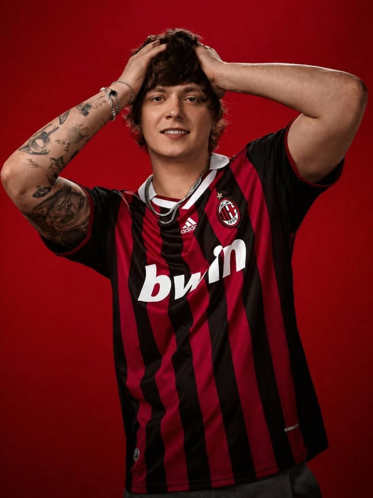

Статус: Участник
Дата рождения: 10 января 1994 года
Место рождения: Тюмень
Псевдоним: OG Buda
Родился в городе Тюмень, где прожил первый год своей жизни. Из-за преступной жизни его отца - Алексея Ляхова, который был участником группировки «Десятка», семья была вынуждена переехать в столицу Венгрии - Будапешт. Там Григорий обучался в школе при российском посольстве, где со временем познакомился с другим российским рэпером - Feduk. Музыкой стал увлекаться ещё с детства. Вернувшись в Россию, выложил первый свой официальный трек под названием «1000 freestyle» зимой 2017 года. После смерти его близкого друга - Даниила Царева, известного под псевдонимом Lil Melon, сблизился с другими артистами, которые так же были знакомы с Даней и писались на его студии. Со временем их дружба превратилась в объединение Melon Music, которое считается одним из самых главных в российском рэпе.